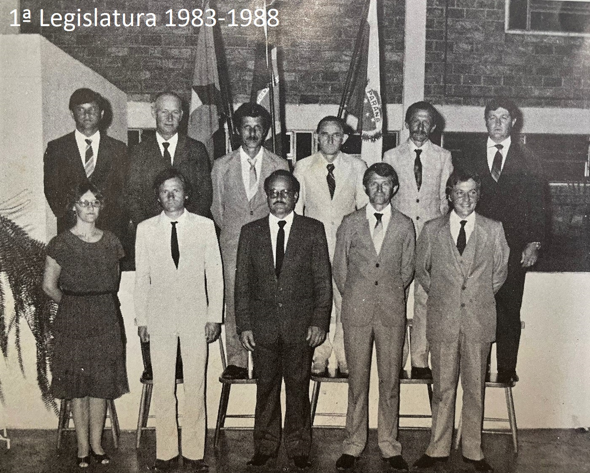

História
Missal foi fundada em 25 de julho de 1963 e possui uma rica história ligada à colonização e agricultura.
O nome do município “Missal” originou-se do fato que os bispos queriam um nome que significasse objeto religioso, para simbolizar de alguma maneira sua origem inserida no fato religioso. Todos conheciam como Gleba dos Bispos, ou Terra dos Bispos. Foram sugeridos vários nomes. O nome escolhido foi MISSAL – inspirado pelos colonizadores e pioneiros, baseado no livro em que o sacerdote se orienta para celebrar a missa – fanal do trabalho espiritual do sacerdote, assim como as terras são fanal do trabalho material do agricultor. Turismo
Conheça os principais pontos turísticos de Missal
( BALNEARIO VILA NATAL ) A prainha de Missal é conhecida como uma das praias artificiais que possuem um ambiente familiar, muito verde, espaços para descansar e aliviar a pressão do ano inteiro e fugir da correria. Um local de muito sossego, em resumo. (CAFÉ COLONIAL) O evento ocorre na metade de junho, sempre próximo ao Dia dos Namorados. São servidos mais de 60 pratos, doces e salgados. O Café Colonial é tradicional e beneficente.

Cultura
A cidade é conhecida por suas festas e tradições culturais que atraem visitantes de toda a região.
DEUTSCHES FEST A Festa Alemã de Missal é considera a maior festa típica do Oeste do Paraná. O evento foi criado em 2002 para preservar a cultura e, divulgar as tradições de geração a geração. A Deutsches Fest acontece todos os anos no fim de semana seguinte à Páscoa. Há muita alegria, chopp, diversão, concursos da Rainha e Casal Fritz e Frida, músicas típicas, jogo do barril, brincadeiras e gastronomia típica.